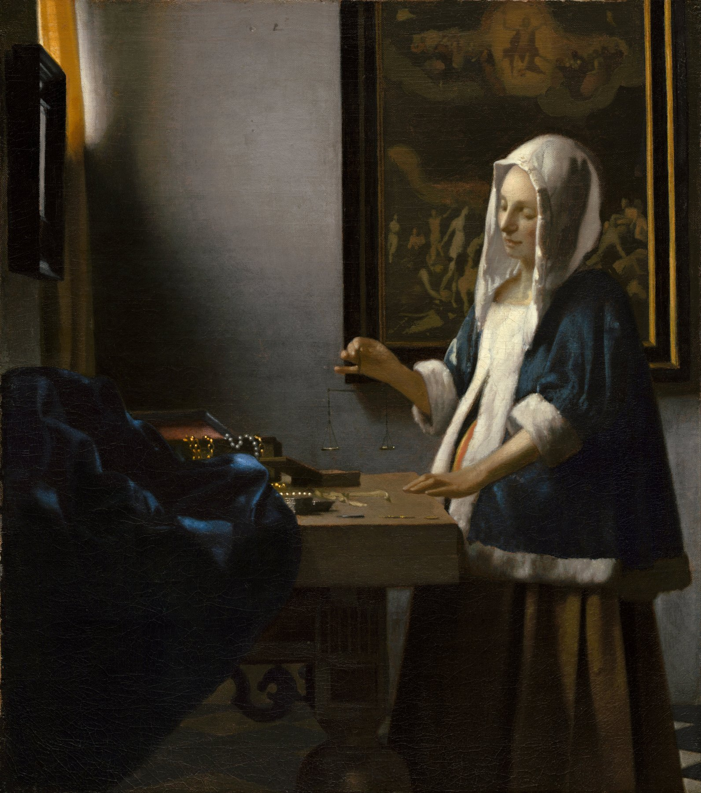

Regard n° 05 · Analyse de situation
Des parents exigent un résultat immédiat
Comment agir avec constance sans exiger chaque soir la preuve du résultat ?
La situation
Après trois semaines d’accompagnement, des parents demandent pourquoi leur enfant n’est pas encore autonome, attentif et apaisé. Chaque progrès invisible leur paraît une absence de progrès.
L’illusion de l’effet immédiat
L’éducation travaille souvent sans signe spectaculaire. Une règle répétée, une lecture partagée ou une responsabilité confiée produisent des effets par accumulation. Exiger une preuve rapide pousse les adultes à changer sans cesse de méthode, ce qui prive l’enfant de la continuité dont il a besoin.
Patience n’est pas passivité
Attendre ne signifie pas laisser faire. Le temps long suppose des gestes très concrets : observer, tenir une règle, ajuster un niveau d’aide, revenir sur un incident et mesurer les évolutions sur plusieurs semaines plutôt que sur une soirée.
Le point de discernement
Il faut distinguer ce qui mûrit lentement de ce qui s’aggrave réellement. La patience devient abandon lorsqu’aucun indicateur n’est suivi ; l’urgence devient agitation lorsque chaque variation provoque une nouvelle stratégie. Le jugement éducatif s’appuie sur une durée définie et des signes observables.
Que faire ?
Choisir un seul objectif pendant quatre semaines, convenir de deux indicateurs simples, tenir le cadre et faire un bilan à date fixe. Cette discipline protège l’enfant des réactions changeantes de l’adulte et protège l’adulte de son impatience.

Pour exercer son discernement
Décrire
Énoncer les faits sans intention prêtée ni diagnostic global.
Distinguer
Séparer ce qui dépend de l’enfant, de l’adulte et du cadre.
Décider
Choisir une action proportionnée, explicable et réévaluable.